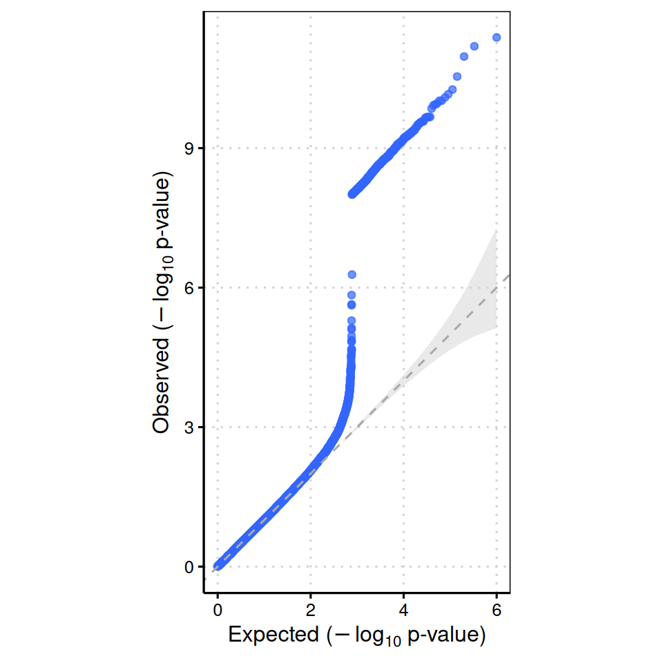
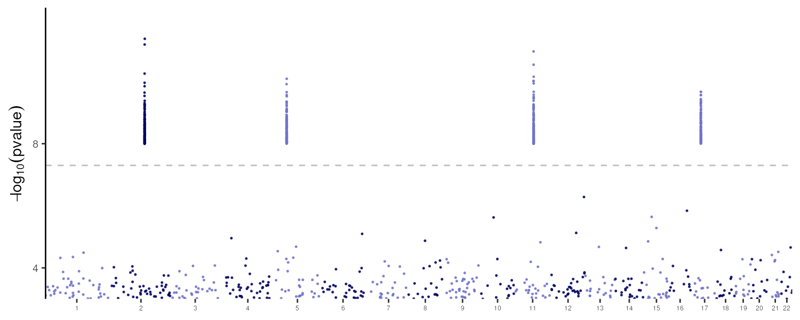

library(gwasplot)
#> ℹ Setting duckdb_max_memory to 5GB, using 80% of available system memory.
#> ℹ Change this with options(duckdb_max_memory = 'XGB')
#>
#> Attaching package: 'gwasplot'
#> The following object is masked from 'package:stats':
#>
#> qqplot
# Approximate chromosome sizes (Mb, hg38)
chr_mb <- c(249, 242, 198, 190, 181, 171, 159, 145, 138, 134,
135, 133, 115, 107, 102, 90, 83, 80, 59, 63, 47, 51)
sim_gwas <- function(n_total, hits = NULL,
chroms = paste0("chr", 1:22)) {
sizes <- chr_mb[seq_along(chroms)]
dfs <- Map(function(ch, mb) {
n <- max(1L, round(n_total * mb / sum(sizes)))
data.frame(
CHROM = ch,
POS = sort(sample.int(mb * 1e6L, n)),
PVALUE = runif(n)
)
}, chroms, sizes)
df <- do.call(rbind, dfs)
for (h in hits) {
idx <- df$CHROM == h$chrom & abs(df$POS - h$pos) < h$window
df$PVALUE[idx] <- runif(sum(idx), h$pmin, h$pmax)
}
df
}
set.seed(42)
gwas_df <- sim_gwas(
n_total = 500000,
hits = list(
list(chrom = "chr2", pos = 135e6, window = 5e5, pmin = 1e-15, pmax = 1e-8),
list(chrom = "chr5", pos = 50e6, window = 5e5, pmin = 1e-12, pmax = 1e-8),
list(chrom = "chr11", pos = 70e6, window = 5e5, pmin = 1e-20, pmax = 1e-8),
list(chrom = "chr17", pos = 30e6, window = 5e5, pmin = 1e-10, pmax = 1e-8)
)
)
head(gwas_df)
#> CHROM POS PVALUE
#> chr1.1 chr1 611 0.4831109
#> chr1.2 chr1 1527 0.6988779
#> chr1.3 chr1 9474 0.8769163
#> chr1.4 chr1 28440 0.3938541
#> chr1.5 chr1 54879 0.7036494
#> chr1.6 chr1 58418 0.5482878gwasplot provides fast Manhattan and QQ plots for GWAS summary statistics. This vignette walks through the core plotting workflow using simulated data — no real GWAS files or DuckDB connections required.
Simulate data
The helper below generates a data frame with standard columns CHROM, POS, and PVALUE, distributing variants proportionally across chromosomes and optionally injecting genome-wide significant signals.
Genomic inflation factor
lambda_gc() computes the genomic inflation factor from the PVALUE column. A value close to 1 indicates well-controlled test statistics.
lambda_gc(gwas_df)
#> lambda_GC = 1.0007
#> [1] 1.000725QQ plot
qqplot() accepts a numeric vector of p-values and returns a ggplot object, which renders inline in the document.
qqplot(gwas_df$PVALUE)
Manhattan plot
manhattan() saves the plot to a file via ggsave. Pass width, height, and dpi through ... to control output dimensions.
outfile <- knitr::fig_path(".png")
dir.create(dirname(outfile), showWarnings = FALSE, recursive = TRUE)
manhattan(gwas_df, output = outfile, width = 10, height = 4, dpi = 150, base_size = 14)
#> INFO [2026-06-11 21:04:23] Now preparing to plot
#> INFO [2026-06-11 21:04:23] Done preparing to plot 1168 SNPs.
#> Warning: The `size` argument of `element_line()` is deprecated as of ggplot2 3.4.0.
#> ℹ Please use the `linewidth` argument instead.
#> ℹ The deprecated feature was likely used in the gwasplot package.
#> Please report the issue at <https://github.com/weinstocklab/gwasplot/issues>.
#> INFO [2026-06-11 21:04:23] Now rendering
#> INFO [2026-06-11 21:04:24] done plotting.
knitr::include_graphics(outfile)
The four injected signals on chromosomes 2, 5, 11, and 17 are clearly visible above the genome-wide significance threshold (−log₁₀ p ≈ 7.3).